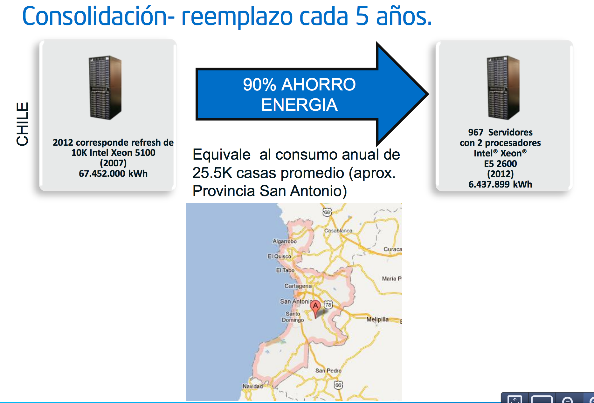
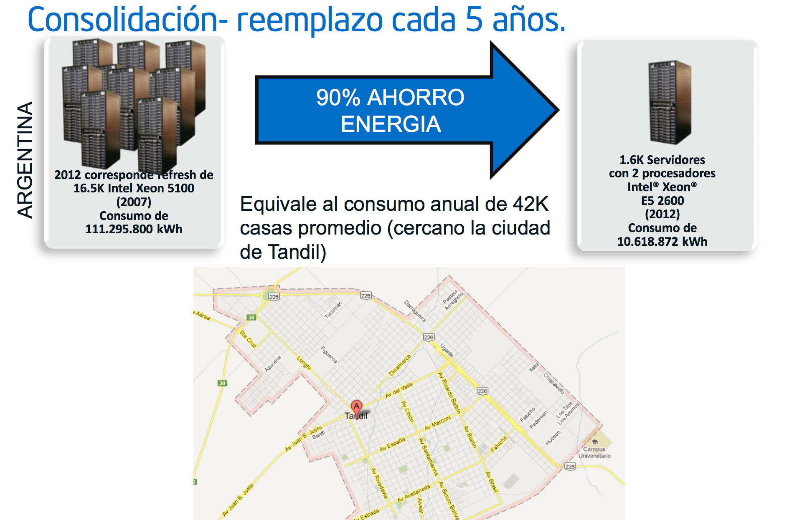

Energía
Hace unos días conversaba con un proveedor de servicios de datacenters acá en Chile, me comentaba que lamentablemente no es posible tener datacenters certificados Tier-4 en nuestro país. La razón, en términos simples, porque contamos con sólo una “carretera eléctrica” que suministra energía a los centros de cómputo. Para alcanzar el máximo nivel de certificación de los datacenters, la energía debe venir de dos fuentes independientes una de la otra.
Todos percibimos la frágilidad de nuestra infraestructura energética, es cosa de recordar los eventos post terremoto, y el gran corte de electricidad que afectó a gran parte del país pocos meses después del terremoto de 2010.
Lo cierto es que nuestra política energética como país nos está perjudicando en el ámbito del desarrollo tecnológico, es muy difícil que pretendamos desarrollar una industria de servicios de infraestructura a nivel internacional con esta inmadurez en términos de gestión de las necesidades energéticas.
Los datacenters modernos, de alta densidad y con tecnología green consumen entre 800 a 1.200 watts/hora por metro cuadrado. Un datacenter de unos 1.000 metros cuadrados, como los que ya existen en Chile, pueden llegar a consumir el equivalente a lo que consumen unas 2.500 a 4.000 casas.
Pero esto es bastante eficiente. Debido a las nuevas tecnologías de virtualización y alta densidad, estos datacenters son capaces de sostener 10 veces más poder de cómputo que muchas tecnologías actuales.
A continuación voy a compartir con ustedes algunas imágenes provienentes de una presentación de Intel del año pasado, en que presentaban sus nuevas CPUs orientadas a servidores.

Lo que nos dice esta primera lámina es que en 2012 correspondía la renovación 10.000 servidores Xeon 5100 que se encuentran en Chile, estos servidores consumen anualmente el equivalente a lo que consumen todas las casas de la Provincia de San Antonio.
Todos esos 10.000 servidores se pueden reemplazar por 967 servidores Xeon E5 2600 y el consumo disminuye drásticamente ¡a un 10% de la demanda actual!
Para el caso de Argentina, tenemos lo siguiente:

La cantidad de servidores que se tendría que reemplazar consumen el equivalente de las casas de la ciudad de Tandil. Nuevamente, con el cambio tecnológico podemos ahorrar el 90% de la energía.
En mayo de este año Alejandro Barros solicitó mediante ley de transparencia, el informe del impacto de la medida de cambio de hora. En este post de Alejandro pueden ver un análisis de ese documento.
De acuerdo a esa minuta esta medida significó un ahorro estimado de 39 GWh (un cálculo aparentemente realizado con lápiz en reverso de un sobre, porque no parece que existan mediciones concretas y evidencias de estos resultados.
Pero aceptémos por un momento esas cifras como reales, según nuestras autoridades modificar el horario de invierno ahorra 39 GWh, pues si analizan la propuesta de Intel de reemplazar los servidores con más de 5 años de actualidad se obtienen 68 GWh anuales de ahorro, efectivos y permanentes, sin las externalidades de cambiar la hora. Y ese estudio sólo considera una parte de nuestro parque de servidores y computadores.
Hay dos problemas que he expuesto en este post, uno es que no existe una política seria de generación y distribución de energía, que está afectando el desarrollo de estándares de alta calidad en una industria de servicio concreta: la prestación de servicios de infraestructura de cómputo y tratamiento de datos (datacenters), hasta que no mejoremos esto nuestros datacenters no podrán certificarse en el estándar más alto (Tier-4).
El otro problema es que al parecer las autoridades no han tenido las competencias adecuadas para analizar soluciones efectivas para mejorar la eficiencia energética, yo les he mostrado el caso de mejoras que puede realizar la industria TI, que con un esfuerzo moderado puede ser más efectiva que las medidas actuales. Pero todo esto requiere que la autoridad escuche a los especialistas, y no insista con soluciones que tuvieron éxito hace 5 ó 6 décadas atrás, cuando la tecnología y el uso de esta era muy distinto.